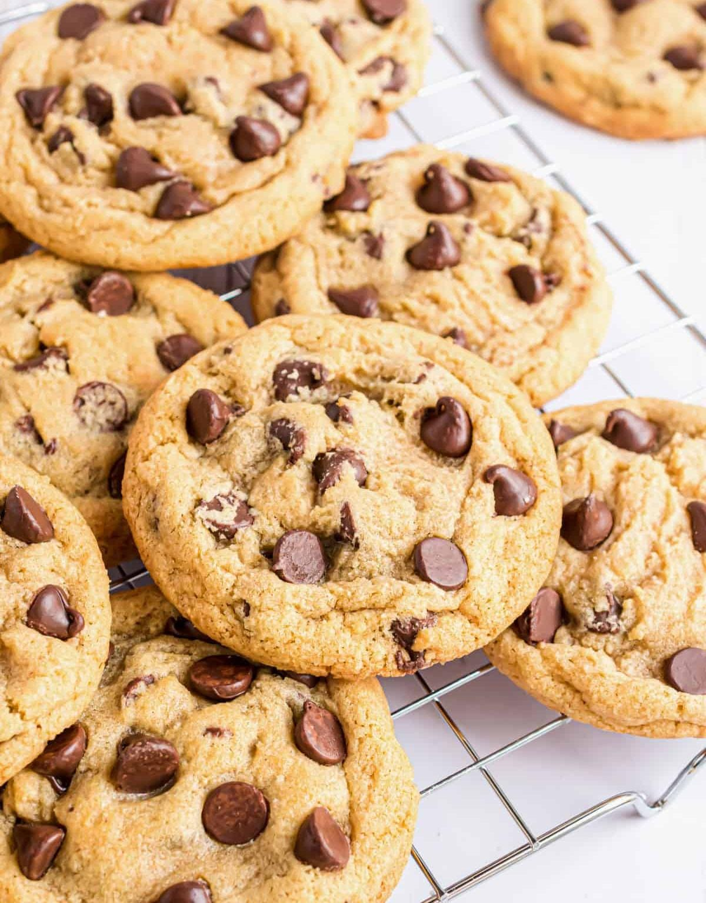

Chocolate Chip Cookies
⭐⭐⭐⭐⭐ 4.8 Rating | ⏱ 30 Minutes | 🍽 20 Cookies
Category
Dessert
Difficulty
Easy
Calories
180 kcal
Cooking Style
Baked
📋 Ingredients
- 2 cups All-Purpose Flour
- 1 cup Butter (softened)
- 1 cup Brown Sugar
- ½ cup White Sugar
- 1 Egg
- 1 tsp Vanilla Essence
- 1 tsp Baking Soda
- ½ tsp Salt
- 1 cup Chocolate Chips
🍳 Required Utensils
- Mixing Bowl
- Measuring Cups
- Electric Mixer or Whisk
- Baking Tray
- Baking Paper
- Oven
- Cooling Rack
- Spatula
📖 Introduction
Chocolate Chip Cookies are crispy on the outside and soft on the inside. They are one of the world's most loved baked snacks and are perfect with milk, tea, or coffee.
🔬 Principle
Cookies are prepared by mixing butter, sugar, flour, and baking soda. During baking, the dough spreads, rises slightly, and becomes golden brown while chocolate chips melt inside.
👨🍳 Procedure
- Preheat the oven to 180°C.
- Beat butter, brown sugar, and white sugar until creamy.
- Add egg and vanilla essence.
- Mix flour, baking soda, and salt separately.
- Combine the dry ingredients with the butter mixture.
- Add chocolate chips and mix gently.
- Shape small cookie balls.
- Place them on a baking tray with space between each cookie.
- Bake for 12–15 minutes until golden brown.
- Cool on a wire rack before serving.
⚠ Precautions
- Do not overmix the dough.
- Leave enough space between cookies.
- Avoid overbaking.
- Use fresh baking soda.
- Allow cookies to cool before storing.
💡 Chef Tips
- Use dark chocolate chips for richer flavour.
- Add chopped nuts for extra crunch.
- Sprinkle a little sea salt before baking.
- Store in an airtight container.
- Serve warm with milk.
🥗 Nutrition Facts
| Nutrient | Amount |
|---|---|
| Calories | 180 kcal |
| Protein | 2 g |
| Carbohydrates | 25 g |
| Fat | 8 g |
| Sugar | 14 g |
🍽 Serving Suggestions
- Serve warm with milk.
- Enjoy with coffee.
- Serve with hot chocolate.
- Use as an ice cream topping.
- Perfect for evening snacks.
🌿 Health Benefits
- Provides quick energy.
- Chocolate contains antioxidants.
- Milk and butter provide calcium.
- Homemade cookies contain no preservatives.
- Can be enjoyed as an occasional treat.
✅ Result
The prepared Chocolate Chip Cookies should be golden brown, crispy around the edges, soft in the center, and filled with melted chocolate chips. They should have a delicious buttery aroma and excellent taste.
🎥 Watch Recipe Video
Learn the complete recipe by watching the step-by-step video.
▶ Watch on YouTube